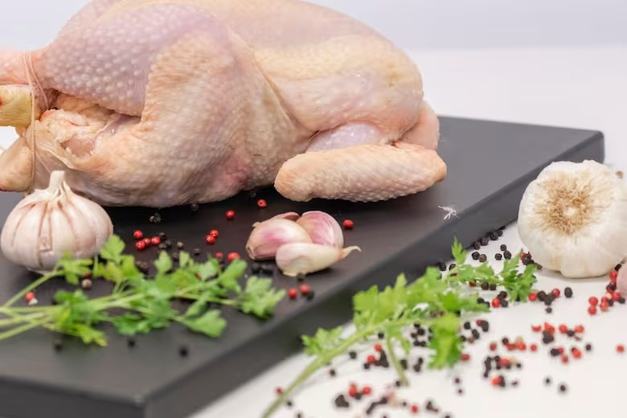

La increible dieta de Illia Golem, el fisicoculturista monstruoso del mundo
El checo Illia Golem, que se convirtió en uno de los culturistas más reconocidos de
Estados Unidos, reconoció recientemente que su meta de pequeño era llegar a ser como Arnold
Schwarzenegger y Sylvester Stallone. Sin embargo, su cuerpo mutó de una forma increíble
transformándose en “el culturista más monstruoso del mundo”, como lo apodaron en las redes sociales.
Torso y espalda del ruso mutante
Pero mantener su físico no es algo fácil, sobre todo por la dieta diaria que debe llevar. En una
entrevista con el sitio Men’s Healt, el culturista de 35 años aseguró que ingiere 16.500 calorías
por día, repartidas en siete comidas y en las que predominan el sushi y la carne (2,5 kilos de
filetes).
La dieta diaria de Illia Golem
Comida 1: 300 gramos de avena en copos.
Comida 2: 3 platos de sushi de 36 piezas cada uno. (1600 gramos de arroz, 800 gramos de salmón).
Comida 3: 1300 gramos de ternera y un postre de crepes con helado.
Comida 4: 500 gramos de arroz, aceitunas, omega 3 y más un tazón de pasta fresca.
Comida 5: 200 gramos de queso y 300 gramos de pasta.
Comida 6: Otros 1300 gramos de ternera y 700 gramos de queso cottage o requesón.
Comida 7: 14 tortitas de avena con sirope de arce.
Sobre sus inicios en el mundo de la musculación, Illia Golem señaló que, “cuando comencé a entrenar
no
había Internet ni redes sociales para aprender, me guiaba sólo por mis conocimientos en revistas y
la
ayuda del dueño del gimnasio”. El culturista, que de joven era fanático del esquí, el ciclismo y el
tenis, hoy registra increíbles récords personales en press de banca (270 kilos), peso muerto (315
kilos)
y sentadillas (315 kilos). Actualmente su fisiologia es de 1,85 metros de altura y 158 kilos.
Superalimento: cuál es el aliado perfecto en el déficit calórico
El déficit calórico es un balance negativo entre el gasto y la ingesta de energía. Se puede dar de
forma voluntaria o de forma involuntaria. El déficit calórico involuntario puede obedecer a
distintos factores, por ejemplo a enfermedades que aumenten el gasto energético por parte del
organismo o que afecten la ingesta o la digesto-absorción de nutrientes, o situaciones quirúrgicas
con períodos de reposo prolongados, como así también a problemas en el acceso a los alimentos.
En este sentido, el Centro de Información Nutricional de la Carne de Pollo (Cincap) informó sobre
uno de los temas más comentados en el mundo de la alimentación saludable, el fitness y las redes
sociales: el déficit calórico y el rol de la carne de pollo como aliada en este proceso.
“En el déficit calórico involuntario, la principal ventaja nutricional de la carne de pollo es su
densidad de nutrientes. Una porción promedio de 150 gramos (1/2 pechuga de pollo o 1 muslo mediano)
aportará 33 gramos de proteínas de excelente calidad y de buena disponibilidad, así como un bajo
aporte de grasas cardiosaludables y una diversidad de vitaminas y minerales, entre las que se
encuentran las vitaminas del complejo B, el zinc, el fósforo y el selenio”, señalaron.

Una porción promedio de 150 gramos (1/2 pechuga de pollo o 1 muslo mediano) aportará 33 gramos
de proteínas de excelente calidad y de buena disponibilidad, así como un bajo aporte de grasas
cardiosaludables y una diversidad de vitaminas y minerales
Otras ventajas del pollo
Saciación: Por su contenido de proteínas, las mismas ayudan a
sentir la sensación de plenitud
que permite hacer un stop en cada comida, sin comer de más.
Mantenimiento de masa libre de grasa:
las proteínas consumidas, en el marco de una alimentación completa y saludable y una
vida
activa, sostienen la masa muscular y, por tanto, el descenso de peso logrado.
Prevención de sarcopenia:
los alimentos fuentes de proteínas, como la carne de pollo, en el marco de una
alimentación
completa y saludable, junto con la realización de ejercicio físico (de fuerza,
preferentemente) ayuda a prevenir o retrasar el inicio de la sarcopenia, que es la
pérdida
progresiva de masa y función muscular.
Versatilidad:
la carne de pollo permite un sinfín de preparaciones prácticas y sencillas (pero también
gourmet) que abre la posibilidad a comer rico, sano y variado toda la semana.
El culturista Joesthetics muere con 30 años
Joe Lindner, conocido en Instagram como Joesthetics, murió por un aneurismo cerebral
El culturista e influencer Joe Lindner, que tenía más de 9 millones de seguidores en Instagram como
Joesthetics y desaconsejaba el uso de esteroides tras reconocer que él los había utilizado
(sufriendo ginecomastia). , ha muerto a los 30 años por un aneurisma cerebral.
La opinión popular fue que la causa de muerte fue por el uso excesivo de esteroides pero La novia de
Joe Linder desmintió que la muerte del famoso fisioculturista se debiese al consumo indebido
esteroides: "No es justo que alguien simplemente adivine cómo murió o diga que sufrió una
sobredosis. No es justo. Joe fue lo suficientemente valiente como para admitir que usaba esteroides,
eso no es razón para creer lo que se dice".
¿A qué se debió la murte de Joe Lindner?
Sin una autopsia o un informe médico, más allá de las declaraciones de su novia, no podemos saber
gran cosa sobre la muerte del culturista.
No obstante, debemos recordar que un aneurisma es una zona debilitada en la pared de un vaso
sanguíneo. Se calcula que una de cada cincuenta personas tienen un aneurisma en el cerebro, pero en
muy pocos casos este llega a romperse.
No obstante, si se acumulan coágulos, es más fácil que se produzca dicha rotura y, con ella,
posiblemente la muerte. Una persona que ha estado sometida durante años a terapia de reemplazo de
testosterona podría tener más riesgo de acumulación de coágulos. Aunque, de nuevo, no sabemos si es
el caso de Lindner .
Sí que sabemos que el culturista tenía una rara afección por la cual sus músculos son muy sensibles
al movimiento o la presión. Por este motivo, él tenía miedo de sufrir un ataque al corazón, ya que
al fin y al cabo, este no deja de ser casi totalmente músculo.
En definitiva, pudieron ser muchos los motivos que condujeron a su triste fallecimiento. No es
seguro que el culturismo estuviese implicado, pero sí sabemos que en este se realizan muchísimas
prácticas peligrosas para la salud. Por eso, antes de cruzar ciertos límites, deberíamos pensar que,
cuando es el cuerpo el que los marca, suele ser por algo.
¿Cuál es la rutina de CBUM?
El cuatro veces campeón de Mister Olympia Classic, Chris Bumstead, más conocido como CBUM, nos
enseña cuál es su rutina
Chris Bumstead es probablemente uno de los deportistas más populares en las redes sociales. Desde
que empezase en 2016 a compartir sus entrenamientos y su desarrollo, se ha ido ganando el cariño y
el respeto de muchos aficionados tanto al culturismo como al deporte en general, sobre todo tras
cosechar 4 premios Mr. Olympia, la mayor distinción del mundo del culturismo. Pero su historia con
el deporte no empieza con su tetracampeonato, ni siquiera con sus primeros vídeos de entrenamiento.
Hay que retroceder hasta cuando Chris era un niño canadiense como cualquier otro. Lo que le
diferenciaba del resto era su pasión extrema por los deportes y por los ejercicios de fuerza, lo que
le llevó a levantar pesas desde los 14 años como complemento a toda la actividad física que ya
realizaba. Su despliegue y desempeño fueron tales que, con solo 18 años, Bumpstead ya levantaba 220
kg en peso muerto y otros 220 kg en sentadilla.
En 2016, CBum consiguió su carnet profesional de la IFBB e hizo su debut en competición pro, aunque
no consiguió ningún premio. Esta decepción no le hizo rendirse en su camino a la cima, como tampoco
lo hizo el diagnóstico de la enfermedad de Berger en 2018. El atleta sufre desde entonces esta
enfermedad autoinmune que afecta a su sistema renal. ¿Es un obstáculo para conseguir sus objetivos?
Sí. ¿Es un impedimento? No.
Pese a todo, y sumando nuevas decepciones, esta vez en forma de dos segundos puestos que le dejaron
con la miel en los labios, en 2019 CBum se presentó por tercera vez al certamen Mr. Olympia. Y como
se suele decir, a la tercera fue la vencida: Chris Bumstead logró el primer puesto en la categoría
Classic Physique.
Nadie le ha bajado desde entonces de lo más alto del podio. Ni a él ni a su bigote, convertido en
amuleto desde su primera victoria.
Esta es su rutina:(modificar titulo wachin)
Día 1: Espalda
Peso muerto: 4 x 10/8/8/Fallo
Remo con barra: 4 x 12/10/10/8 (2 sets agarre supino/ 2 sets agarre prono)
Dominadas con agarre amplio: 4 x 12-15
Jalón al pecho: 4 x 12-15
Remo con mancuerna: 4 x 15/12/10/10
Remo en máquina: 3 x 20
Hiperextensiones: 2 x Fallo
Día 2: Pecho - Biceps
Press de banca inclinado con mancuernas: 5 x 15/15/12/12/10
Press de banca en máquina Smith: 4 x 12/10/8/8
Aperturas inclinadas con mancuernas: 3 x 15/12/12
Aperturas en cable: 3 x 15-12 (Superset)
Flexiones: 3 x Fallo
Curl con barra: 3 x 15 (Superset)
Curl inverso con barra: 3 x Fallo
Curl del predicador con barra: 3 x 10-12 (Drop Sets en el 2° y 3°) (Superset)